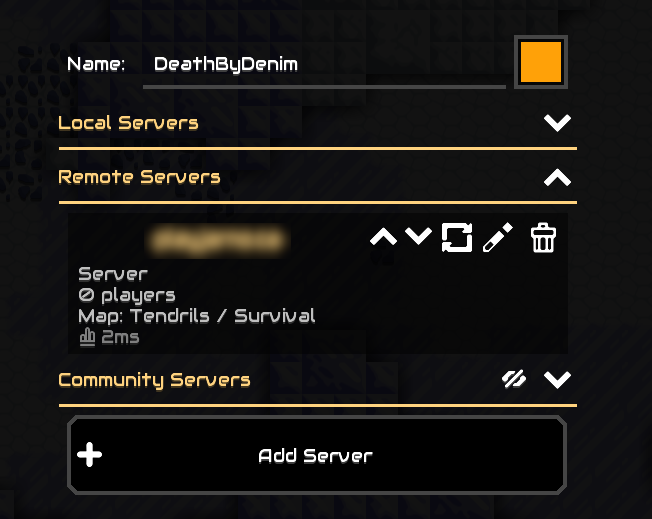

Tips
-
There is lots of stuff to build, so at first things will be
daunting, but worry not, the mode is co-op so you are all
working together.
- Move around with the WASD keys.
- Use the left mouse button to shoot or build. It will build if you select something from the menu in the bottom right, otherwise it will shoot.
Connecting
From the main menu choose "Play" and then "Join
Game". You will be able to set you in-game name here.
To join the server, click on "Add Server" and type in {{ site.content.domain_name }}. When you press Ok, it will be added under "Remote Servers".

You can then click on the server name to join.